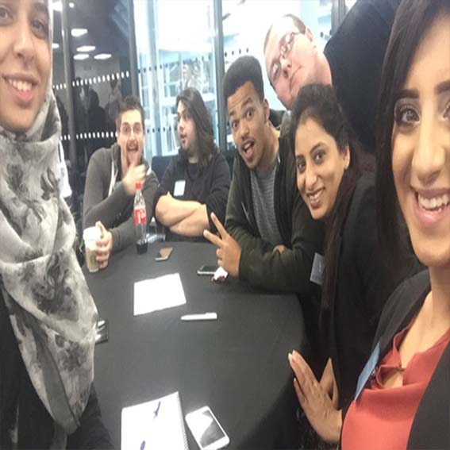

About
My Manchester Metropolitan University journey and achievements
-
Sept 2014- June 2015
First Year Degree - 87.75%
Modules covered - Computer Systems Fundamentals, Information Systems, Multimedia & web and Programming.
-
2014 - 2015
Academic Achievement Award
Awarded for outstanding achievement during the 2014/2015 academic year on level 4 of the course BSc(Hons) Multimedia & Web Computing.
-
Sept 2015- June 2016
Second Year Degree - 81.5%
Modules covered - Web and mobile development, Information Systems, Multimedia development, Professional development.
-

November 2015-December 2015
University Technology Challenge
Selected as a finalist to represent the University to the Technology Challenge arranged by BBC, Barclays and Bank of America Merrill Lynch.
-

September 2016 - June 2017
Third Year Degree - 82%
Modules covered - 3D Web Applications, E-Learning Multimedia, Data Engineering, Project
-
November 2016-December 2016
University Technology Challenge
Selected as a finalist to represent the University to the Technology Challenge arranged by BBC, Barclays and Bank of America Merrill Lynch.
-
July 2017
Graduated
Bsc. First Class(Hons) in multimedia & web computing
-
July 2017
Extra-Curricular Activities Award
For partcipating Army leadership training course, University Technology Challege, Learning new technology etc. prioritising these activities during the academic year.
-
Hire me &
be Part Of
my Story!